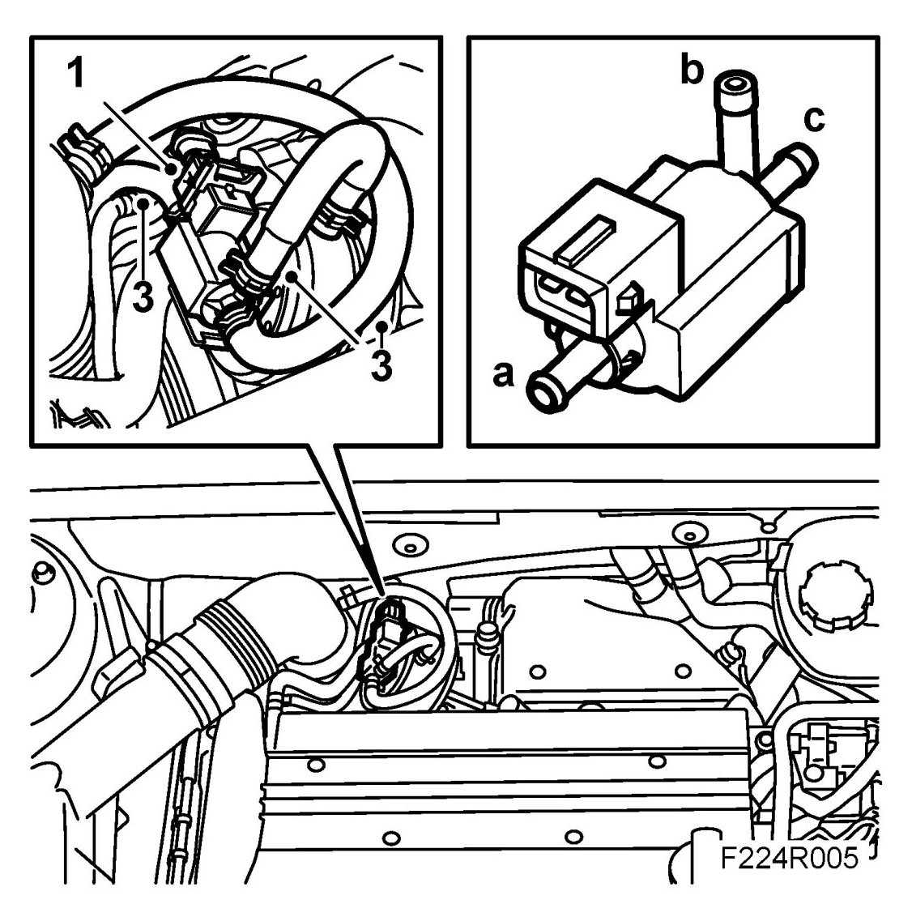
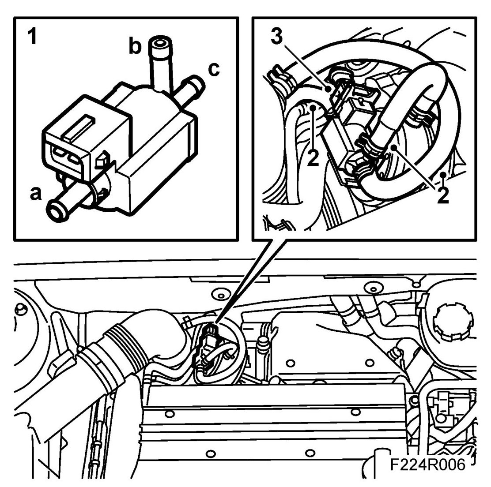

Solenoid Valve, Charge Air (179), B207
Solenoid Valve, Charge Air (179), B207
To remove
1. Remove the connector from the solenoid valve.

2. Press down the catch carefully with a screwdriver and remove the solenoid valve from its mounting.
3. Detach the hoses from the valve.
To fit
1. Fit the valve to its mounting.

2. Connect the hoses to the valve.
a. Turbine housing
b. Turbocharger diaphragm box
c. Turbocharger intake hose
Make sure the hoses are not pinched together and adjust as necessary.
3. Attach the connector.